Pruebas estructurales
Tipos de pruebas de unidad
- Sin considerar detalles de implementación
- Pruebas basadas en las especificaciones o modelos
- Considerando detalles de implementación
- Errore de programación habituales
- Pruebas estructurales
- Pruebas dinámicas: implican ejecutar el código
- Pruebas estáticas: revisiones de código
- Complementarias
- Las pruebas estructurales incluyen casos que no pueden identificarse de la especificación, ejemplos:
- Implementación de un elemento de la especificación en varias partes del programa
- Errores en la estructura de datos elegida, colisiones en una tabla hash...
- ...
- Y viceversa
- Caminos no implementados
- ...
Top 10 errors Java Programmers Make
- Null pointers
- Capitalization errors
- Preventing concurrent access to shared variables by threads
- Forgeting that Java is zero-indexed
- Writing blank exception handlers
- Confusion over passing by value and passing by reference
- Comparing two objects (
== instead of .equals())
- Comparison assignment (
= rather than ==)
- Mistyping the name of a method when overriding
- Accessing non-static member variables from static methods (such as
main())
Pruebas estructurales
- Mejor para encontrar defectos que para explorar el comportamiento del sistema
- Si parte de un programa no ha sido ejecutado por ningún caso de prueba no podemos encontrar errores ahí
- Pero, en qué parte ? Dos enfoques:
- Orientado al flujo de control
- Cuánto del flujo de control ha sido analizado ?
- Orientado al flujo de datos
- Cuánto de la relación definición-uso de los datos ha sido analizado ?
- Complemento a las pruebas funcionales
Las garantías de la cobertura
- El que se ejecuten todos los elementos del flujo de control no garantiza encontrar todos los errores
- La ejecución de una sentencia errónea no siempre resulta en un fallo
- Puede que el estado no esté corrupto cuando la sentencia es ejecutada con ciertos valores
- Puede que estados corruptos no se propaguen para acabar produciendo un fallo
- Qué valor tiene la cobertura estructural ?
- Incrementa la confianza en la amplitud de las pruebas
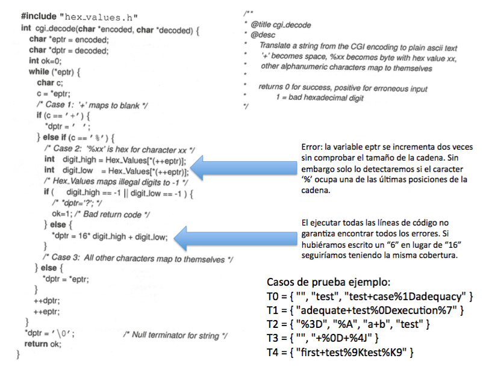
Pruebas estructurales en la práctica
- Creamos las pruebas funcionales y a continuación medimos su cobertura para identificar lo que nos falta
- Identificamos elementos no ejecutados:
- Debidos a diferencias entre la especificación y la implementación
- O a errores en el software o en su proceso de desarrollo
- Especificaciones incompletas, que no incluyen casos presentes en la implementación
- Metodología de implementación muy diferente de la de especificación
- Pruebas funcionales inadecuadas
- Automatizado: muy atractivo !
- Medidas de cobertura representan indecadores de progreso
- A veces utilizados como criterio de compleción
- Hay que tener cuidado, no siempre pueden garantizar la efectividad !
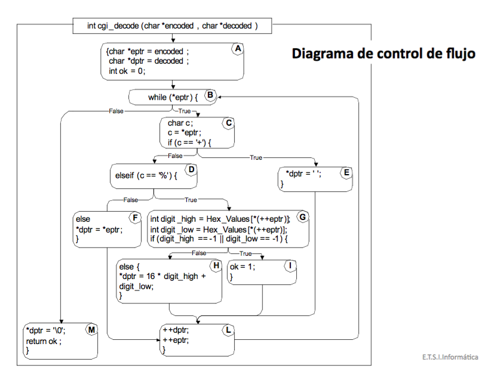
Representaciones del software como grafos
- La ejecución del SW puede ser considerada como una secuencia de estados alternada con acciones (operaciones de la máquina, eventos...) que modifican el estado del sistema
- Utilizamos grafos para representar modelos de ejecución:
- Opción 1: las acciones ocurren en los nodos del grafo y los arcos representan los estados del sistema durante las transferencias de flujos de control
- Opción 2: un estado del sistema se representa por un nodo del grafo y las acciones ocurren en los arcos del grafo

Diagramas de control de flujo
- Grafo de flujo intra-procedural:
- Modela los caminos de control de flujo dentro de un procedimiento o método
- Los nodos del grafo representan bloques de código
- Los arcos del grafo representan caminos alternativos a las sentencias de código que podrían ejecutarse a continuación
- Grafo de flujo inter-procedural o grafo de llamadas:
- Modela las secuencias de llamadas potenciales a varios métodos
- Los nodos del grafo representan métodos
- Los arcos del grafo indican que el método en el origen del arco puede llamar al método en el extremo del arco
Grafos de flujo intraprocedural
- Qué se incluye en un nodo:
- Una serie de sentencias con un único punto de entrada y un único punto de salida
- Si hay varios puntos de entrada a una sentencia de código, la sentencia ha de ser la primera de un nodo
- Si entras en un nodo todas las sentencias del nodo serán ejecutadas
- Los arcos se utilizan cuando hay alternativas a lo que podría ejecutarse a continuación, o para transferir el control a una sentencia para la que hay varios puntos de entrada
- El diagrama debe hacer explícitas las condiciones para que se seleccione una u otra alternativa
Basado en construcciones de lenguajes de programación
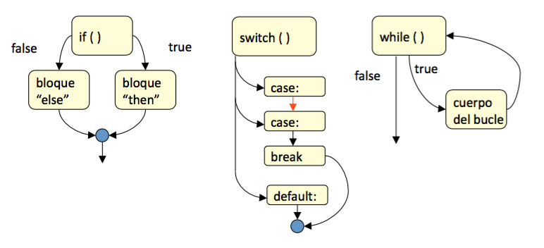
Ejemplo Java
- Función: reemplazar
n con n >= 2, retornos de carro consecutivos por uno y quitar todos los que aparezcan al principio
public static String collapseNewLines(String arg) {
char last = arg.charAt(0);
StringBuilder buffer = new StringBuilder();
for (int index = 0; index < arg.length(); index++) {
char ch = arg.charAt(index);
if (ch != '\n' || last != '\n') {
buffer.append(ch);
last = ch;
}
}
return buffer.toString();
}
Grafo de control de flujo

Notación alternativa
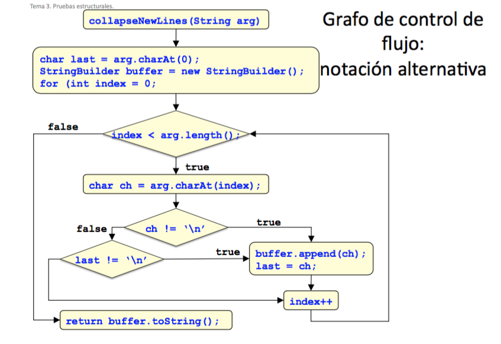
Grafo de control de flujo
- El nivel de precisión puede variar dependiendo de cada caso
- Importa la evaluación de cortocircuitos ?
if (a != null && a.algo())
- Sí, previene de excepciones por puntero null
if (a > 36 && a < 72)
- El orden de evaluación no es relevante
- Deberían considerarse las excepciones
Ejemplo

- Propósito del grafo:
- Derivamos casos de prueba para ejecutar los diferentes caminos
- Si hubiera un número infinito (o muy grande) de caminos tendremos que utilizar algún tipo de criterio de selección para elegir un subconjunto
- Para cada camino determinaremos qué datos de entrada son necesarios
- Algunos de los posibles caminos de ejecución:
- 1 - 2 - 7
- 1 - 2 - 3 - 4 - 6 - 2 - 7
- 1 - 2 - 3 - 5 - 6 - 2 - 7
- 1 - 2 - 3 - 4 - 5 - 6 - 2 - 7
- 1 - 2 - 3 - 4 - 6 - 2 - 3 - 4 - 6 - 2 - 7
- 1 - 2 - 3 - 5 - 6 - 2 - 3 - 4 - 6 - 2 - 7
- 1 - 2 - 3 - 5 - 6 - 2 - 3 - 5 - 6 - 2 - 3 - 4 - 6 - 2 - 7
Grafos de llamadas interprocedurales
- Muestra las relaciones entre métodos llamantes y llamados
- En lenguajes orientados a objetos con polimorfismo el determinar los métodos que se van a ejecutar no es fácil
- Hay una subclase que redefine un método ?
- Llama el método redefinido al método de la superclase ?
- Se está usando un objeto factoría que devuelve objetos de diferentes tipos ?
Ejemplo
public class C {
public static C cFactory(String kind) {
if (kind.equals("C"))
return new C();
if (kind.equals("S"))
return new S();
return null;
}
public static void main(String[] args) {
(new A()).check();
}
void foo() {
System.out.println("Parent foo() called");
}
class S extends C {
void foo() {
System.out.println("Child foo() called");
}
}
class A {
void check() {
C myC = C.cFactory("S");
myC.foo();
}
}
}
Grafos de llamadas
- Con vinculación dinámica solo podemos determinar cuál de los métodos
C.foo() y S.foo() será invocado en tiempo de ejecución
- Podemos analizar el código y determinar que se llamará a
S.foo(), pero un analizador estático de código no siempre podrá determinarlo
- Con análisis estático, debemos considerar la posibilidad de que si un método
foo() es invocado sobre una variable de tipo C entonces la versión de foo() ejecutada puede ser una de:
- Una subclase de
C, si C tiene subclases, o
- Una implementación de
C, si C es una interfaz
Los grafos de llamadas y los contextos
public class C {
public static void main(String[] args) {
C myC = new C();
myC.foo(3);
myC.foo(17);
}
void foo(int n) {
int[] myArray = new int[n];
depends(myArray, 2);
}
void bar(int n) {
int[] myArray = new int[n];
depends(myArray, 2);
}
void depends(int[] a, int n) {
a[n] = 42; // Podemos decir si existe a[n] ?
}
}
- Un grafo sensible al contexto muestra el contexto de parámetros en el que un método es invocado
- En este caso, el grafo sensible al contexto puede ayudar a responder a la pregutna "exite
a[n] ?" en depends()

Caminos en los grafos de llamadas
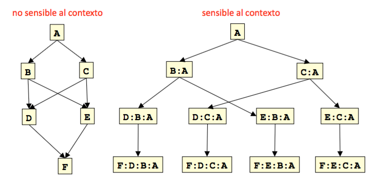
- Hay 4 contextos diferentes en los que el método F puede ser invocado
- El número de contextos puede crecer rápidamente, incluso sin recursión...
Criterios de cobertura para código
- Sentencias
- Ramas
- Condiciones (básicas)
- Ramas y condiciones
- Condiciones compuestas
- Condiciones/decisiones modificado
- Caminos
- Caminos interiores
- Bucles
- Complejidad ciclomática
- Llamadas a procedimientos
- ...
Cobertura de las sentencias
- Criterio: cada sentencia (o nodo del GCF) ha de ejecutarse al menos una vez
- Cobertura:
numero_de_sentencias_ejecutadas / numero_de_sentencias
- Intuición: un fallo en una sentencia puede ser detectado solo ejecutando dicha sentencia
- No siempre es posible alcanzar cobertura 1
- Diferencia entre sentencias y bloques: granularidad
- 100% cobertura de nodos
<====> 100% cobertura de sentencias
- No coincidirá para valores menores de 100

Cobertura de ramas
- Criterio: cada rama (arista en el GCF) ha de ejecutarse al menos una vez
- Cobertura:
numero_de_ramas_ejecutadas / numero_de_ramas
- Intuición: número de ramas ejecutadas por un conjunto de pruebas
- No siempre es posible alcanzar sobertura 1
- Si cubrimos todas las ramas de un grafo visitamos todos los nodos
- 100% cobertura de ramas
====> 100% cobertura de sentencias


Cobertura de condiciones (básicas)
- Criterio: cada condición básica ha de tomar valor
true para al menos un caso de prueba y false para al menos un caso de prueba
- Cobertura:
numero_de_valores_de_verdad_tomados_por_cada_condicion_basica / (2 * numero_de_condiciones_basicas)
- Intuición: las pruebas hacen que cada condición tome valores
true y false

Cobertura de ramas y condiciones
- Cobertura de ramas y condiciones
- Cubre todas las ramas y todas las condiciones
- Cobertura de condiciones compuestas
- Criterio
- Cubre todas las posibles evaluaciones de condiciones compuestas
- Cubre todas las ramas del árbol de decisión
- Exponencial, incluso con cortocircuito
Criterio de condiciones compuestas

- El cortocircuito puede reducir el número de casos, pero no siempre...
- Una condición con 16 condiciones puede requerir 32000 casos de prueba
Criterio de condiciones/decisiones modificado: MC/DC
- Probamos combinaciones relevantes de las condiciones, sin el crecimiento exponencial en el número de pruebas
- Cada condición básica que afecta independientemente a la decisión
- Requiere 2 casos de prueba para cada condición básica
- Las evaluaciones del resto de las condiciones básicas son los mismos
- La condición compuesta se evalúa con valores distintos
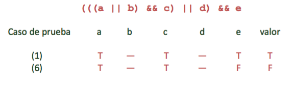
MC/DC: complejidad lineal
N + 1 casos de prueba para N condiciones básicas

- Buen equilibrio entre cobertura y número de casos
- Menos estricto que el criterio de condiciones compuestas, pero más que el resto de los criterios discutidos
- Requerido por estándares de calidad internacionales en aviación (RTCA/DO-178B y EUROCAE ED-12B)
Cobertura de caminos
- Criterio: cada camino ha de ejecutarse al menos una vez
- Cobertura:
numero_de_caminos_ejecutados / numero_de_caminos
- Intuición:
- Más caminos que ramas
- Los criterios basados en decisiones y condiciones consideran las decisiones individualmente
- El criterio basado en caminos considera combinaciones de decisiones a lo largo de los caminos

Cobertura de caminos en la práctica
- El número de caminos en un programa con bucles es infinito
- Criterio imposible de satisfacer
- Compromiso: particionamos el conjunto infinito de caminos en un número finito de clases de caminos
- Limitamos:
- El número de iteraciones de los bucles
- La longitud de los caminos a recorrer
- Las dependencias entre caminos seleccionados
Caminos interiores
- Agrupamos los caminos que se diferencian solo en el subcamino que siguen cuando repiten el cuerpo del bucle
- Seguimos el flujo de control hasta el primer nodo que se repite
- Cubrimos el conjunto de caminos desde la raíz del árbol hasta cada hoja
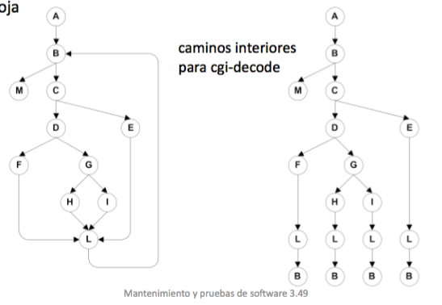
Limitaciones del criterio de caminos interiores
- El número de caminos puede crecer exponencialmente incluso sin bucles
N ramas suponen 2^N caminos- Deducir los datos de entrada puede ser muy complicado, incluso imposible si las condiciones no son independientes
if (a) {
S1;
}
if (b) {
S2;
}
if (d) {
S3;
}
// ...
if (x) {
Sn;
}
Criterio de los bucles
- Variante del criterio de los caminos interiores que trata de la misma forma los bucles pero es menos exigente con otros caminos
- Criterio: un test suite satisface el criterio de los bucles si cada bucle:
- En al menos un caso de prueba el cuerpo del bucle se repite 0 veces
- En al menos un caso de prueba el cuerpo del bucle se repite 1 vez
- En al menos un caso de prueba el cuerpo del bucle se repite más de una vez
Criterio de la complejidad ciclomática
- Criterio: se ha ejecutado un número de caminos independientes mayor que la complejidad ciclomática
Criterio de llamadas a procedimientos
- Pruebas de entradas y salidas de procedimientos
- Procedimientos pueden tener múltiples puntos de entrada y múltiples puntos de salida
- Cobertura de invocaciones
- Un mismo método puede ser invocado desde distintos puntos
Satisfacción de los criterios estructurales
- Algunas veces es imposible alcanzar coberturas del 100%
- Sentencias que no pueden ejecutarse
- Programación defensiva
- Reutilización de código (p.ej. más general de lo necesario)
- Condiciones que no pueden satisfacerse
- Condiciones interdependientes
- Caminos que no pueden ejecutarse
- Decisiones interdependientes
- Código muerto puede indicar un problema de mantenibilidad
- Habitual incluso en aplicaciones bien diseñadas y bien mantenidas
- Soluciones
- Establecer objetivos de cobertura inferiores al 100%
- Requerir justificación de elementos no cubiertos
- Estándares RTCA-DO-178B y EUROCAE ED-12B para MC/DC
Pruebas basadas en los flujos de datos
- Pruebas basadas en los flujos de control
- Las coberturas de nodos y ramas no tienen en cuenta las interacciones entre instrucciones
- Las coberturas basadas en condiciones y caminos son impracticables
- Enorme número de casos de prueba
- Pruebas basadas en los flujos de datos
- Necesitamos centrarnos en los caminos "importantes"
- Las instrucciones interaccionan a lo largo de flujos de datos
- Criterios basados en la forma en que las variables son definidas y utilizadas
- Los valores calculados en una sentencia son utilizaod en otra
- Los cálculos incorrectos solo se revelan cuando se utilizan
Flujo de datos
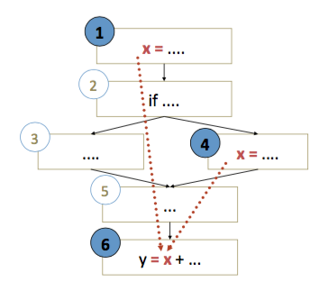
- El valor de
x en 6 podría ser calculado en 1 o en 4
- Un error en 1 o en 4 se desvelaría solo si fuesen usadas en 6
- def: instrucción que asigna un valor a una variable
- uso: instrucción que usa una variable
- Par def-uso (DU):
Pares y caminos DU
- Par DU: par de definición y uso de alguna variable tal que hay al menos un camino DU entre la definición y el uso
x = ...: es una definición de x... x ...: es un uso de x
- Camino DU: un camino sin definiciones en el GFC desde una definición a un uso de la misma variable
- "Sin definiciones": el valor no se cambia en el camino
- Los bucles podrían crear infinitos caminos DU
Caminos sin definiciones
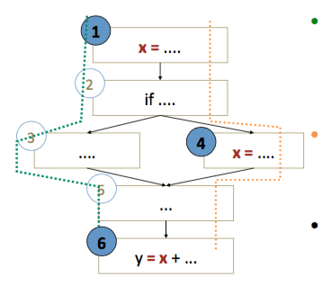
- 1 - 2 - 3 - 5 - 6
- Es un camino sin definiciones (para
x) de 1 a 6
- A
x no se le (re-)asigna ningún valor entre 1 y 6
- 1 - 2 - 4 - 5 - 6
- No es un camino sin definiciones (para
x) de 1 a 6
- A
x se le asigna un valor en 4
- (1,6) es un par DU (para
x) porque 1 - 2 - 3 - 5 - 6 es un camino DU sin definiciones (para x)

Variables, punteros y estructuras
- Casos difíciles
x[i] = ...; ...; y = x[j];
p = &x; ...; *p = 99; ...; q = x;
m.putX(...); ...; y = n.getX(...);
- Son
m y n el mismo objeto ?
- Comparten
m y n el atributo x ?
- Arrays y punteros son críticos para análisis de flujo de datos
- Infra-estimación puede hacer que se nos escapen pares DU
- Sobre-estimación puede hacer que sea irrealizable
Criterios de cobertura
- Pares DU: cada par DU ha de ser ejecutado por al menos un caso de prueba
- Caminos DU: cada camino DU simple (un bucle) ha de ser ejecutado por al menos un caso de prueba
- Definiciones: para cada definición, hay al menos un caso de prueba que ejecuta un par DU que lo contiene
- Cada valor computado es usado al menos una vez
Ejemplo: funciones estadísticas
public static void computeStats(int[] numbers) {
int length = numbers.length;
double med, var, sd, mean, sum, varsum;
sum = 0.0;
for (int i = 0; i < length; i++) {
sum += numbers[i];
}
med = numbers[length / 2];
mean = sum / length;
varsum = 0.0;
for (int i = 0; i < length; i++) {
varsum = varsum + ((numbers[i] - mean) * (numbers[i] - mean));
}
var = varsum / (length - 1.0);
sd = Math.sqrt(var);
System.out.println("length: " + length);
System.out.println("mean: " + mean);
System.out.println("median: " + median);
System.out.println("variance: " + var);
System.out.println("standard deviation: " + sd);
}
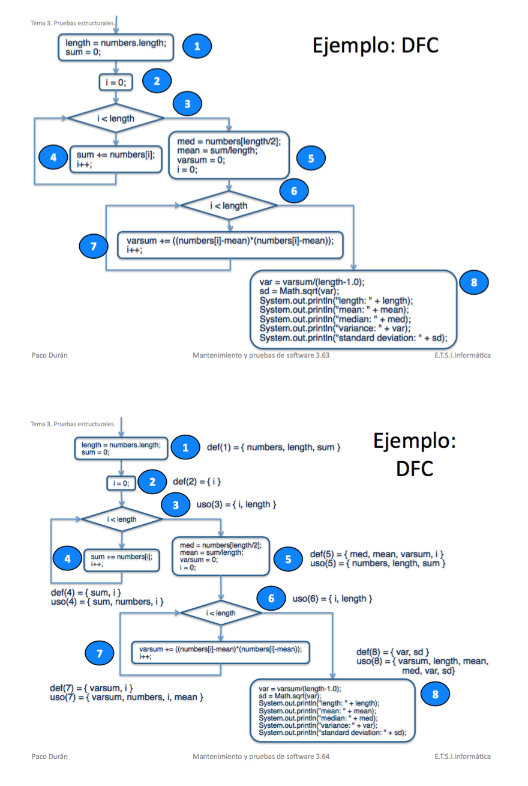

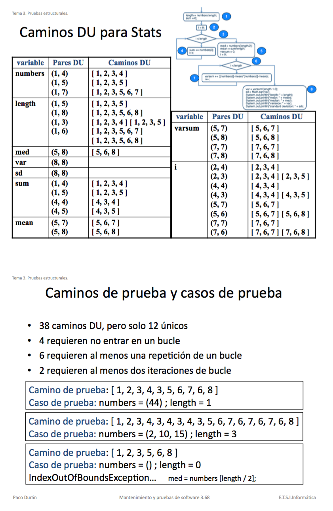